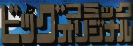
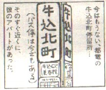
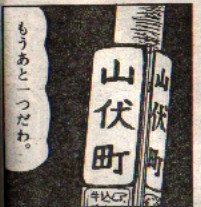

Mahjan talk 雀話。
（４３）山伏町
ビッグコミックオリジナルという大人向けの漫画雑誌がある。表紙のイラストも抜群で有名であるが、○○権に抵触するといけないから、タイトルだけ。↓
その中に西岸良平の「３丁目の夕日」という連載がある。昭和20年代から昭和30年代を中心にしたほのぼのとした作品で、σ(^_^)は大好き。その今月号に女性が都電で恋人の本へ通うシーンがある。みていたら、女性は牛込北町で都電を降り、山伏町あたりを歩いてゆく。
※これも、そのカットだけ。 
これを見ていて、思わず「うわあ、なつかしい（＾０＾）/」
大学時代、水道橋あたりに下宿していた（水道橋を北へ歩いて、後楽園、講道館前をすぎ、東大方面に行ったところ）。下宿場所をあんまり詳しく云うと、思いがけず旧悪がバレるといけない。(^0^； でもまぁ、若い人には分からないように云うと、昔は初音町と呼ばれていたところだ（いまは町名が変わっている)。これだけでは分からないだろうが、よく探すと小さな記念碑くらいはが建立されているかもしれない。（笑）
ま、当時住んでいた場所はどうでもいいとして、その水道橋には、当時、アイウエオという雀荘があった。ここは地下が大食堂で、１Ｆがパチンコ屋。２Ｆ・３Ｆが雀荘だったが、それぞれ100卓、計200卓あった巨大雀荘。200卓となれば、日本最大というだけではなく、世界最大。
２Ｆも３Ｆも料金は同じであったが、２Ｆは主として学生、３Ｆは主としてサラリーマン中恣意の客層であった。σ（-_-）も当時、２Ｆの常連であったが、２Ｆのフロアマネージャーが、いまをときめく小島武夫さん。当時、小島さんも博多から上京して間もない頃。まだ麻雀プロのプの字もない。いま思うと小島さんも当時は新婚ホヤホヤで若かった。。。
小島さんとの思いでは沢山ありすぎるくらいであるが、今回はσ（-_-）の山伏町の思いで話がメインなので一つだけ。
あるとき、打っていたらメンツのＧがトイレへゆきたいといいだした。すると側にいた小島さんが「じゃぁ、私が代打ちを....」
「おいおい、小島さんが代打ちかよ」という声をよそに、Ｇはさっさとトイレへ。で、ちょうど本人が戻ってきたくらいのときに、その小島さんが対面に門前の純チャンを放銃した。見ていたＧはギャフンといったが、小島さんは「悪い悪い」（笑）
で、Ｇが席を替わろうとしたら、小島さんが、「もう一度、打たせて」。Ｇが「はい」というので、そのまま続けて打った。そしたらその局、誰かの打牌で小島さんが黙テンでロン。なんとこれが、さっきと同じ門前の純チャン。。。。（手牌構成は違ってたけど）
うしろで見ていたＧは、「やったやった」と大喜び。小島さんは「じゃ、私はこれで」とあっちへ行ってしまった。Ｇは「さすがは小島さん」とニコニコ顔で席へ座ったが、我々３人は承知しない。
「おい、あれはないぜ」
「なにが....」
「そんなもん、小島さんが一服盛ったに決まってる」
「バカいえ、俺は後ろでちゃんと見てたけど、配牌マトモやったで」
「なにがマトモだ、あんぽんたん。マトモであんなにうまくゆくわけがない」
「そうだそうだ、まったくだ（合唱）」
ということで、小島さんのアガリは全員一致、いや３人一致で無効と決定し、ゲーム続行となった。（笑）
そのほかに、こんなこともあったな....いかんいかん、話を戻そう。。。。
で、土曜日となると、我々不良学生は午後11時の閉店時間まで打っていた。しかし午後一番から打ち出しても、10時間やそこらでは、打った気がしない。そこで小島さんに頼んで麻雀牌を１セット貸し出してもらい、友人の下宿へ移動して徹マンというのがお決まりのパターンとなった（貧乏学生の集団なので、麻雀牌を持っている学生など、めったにいなかった）。
その徹マンの定宿となっていたのが、山伏町にあった同級生のＴの下宿。そこで土曜の午前12時になると、悪友連４人がタクシーに乗り、一路、牛込柳町から山伏町に向かう。それを何度か繰り返していたので、牛込柳町とか山伏町は、自分たちの頭にすっかりインプリンティングされてしまった。
そこで卒業するまでの間、我々の間では山越しロンがあると、「おお、山伏町か」とヘタギャグの合いの手を打つのがお決まりとなっていた。
そんな青春の思いでのある山伏町の名を、思いがけなくコミック誌で発見したので、思わずこのコラムを書いてしまったしだい。_(_ _)_